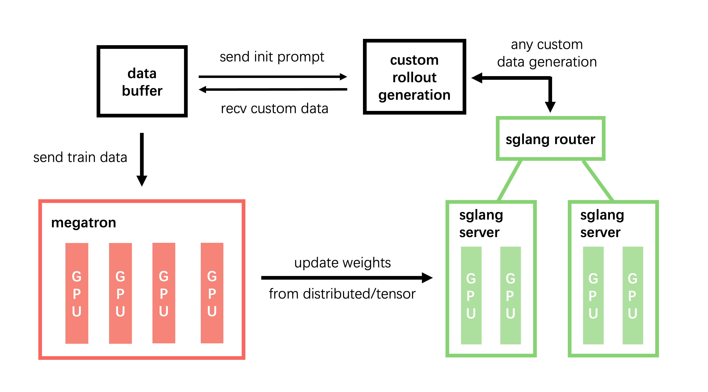

00全景与读法
如果只看算法论文，agentic RL 似乎就是"GRPO 加多轮工具调用"——但工程实践表明，难度不在目标函数，而在目标函数之外的一切。本文把原文的四个问题域拆成十节：先说清每个域的问题根源，再按已收敛 / 收敛中 / 开放三档整理解法谱系，最后落到对昇腾的三点含义。核心结论一句话：agentic RL 的难度是系统性的，因为一条长 rollout 轨迹会同时触发效率、稳定性、一致性三个问题域，而 agentic 场景把每一个都放大。
每一节固定三段：叙事怎么说（左栏，灰）/ 证据是什么（右栏，橙）/ 本站判断（下方色块）。数字按来源分三类标注：第三方 独立测量、审稿记录或多方报道、自报 论文作者或厂商口径、推断 本站分析。原文引用的 2026 年新工作数字均来自搜索摘要与二级来源，凡原文标注 provisional 者本文一律保留，正式引用前建议二次核验。
一条贯穿全文的线索：staleness 修正与训推数值 mismatch 是同一个重要性比率上的两个污染源。异步解耦把 staleness 交给训练侧，数值错配再叠一层，dense shaping 缓解稀疏却放大 hacking 面——四个问题域的边全部汇向"训练稳定性"。
01为什么 agentic RL 的难度是系统性的
一条长 rollout 轨迹同时触发三个问题域。效率：rollout 已占 RL 单步 70%+ wall-clock（D02），长尾轨迹使同步 batch 里最快的 rank 空等最慢的一条，GPU bubble 巨大。稳定性：为消除 bubble 引入异步 / partial rollout，立刻制造 off-policy staleness，重要性权重重尾，单条轨迹可以垄断一个 batch 的梯度。一致性：即便完全同步，训练引擎与推理引擎对同一权重算出的 logprob 也不相等（BF16 舍入 + 归约顺序），名义 on-policy 隐式 off-policy 化。agentic 场景把这一切放大：长尾从"序列长度"单一来源变成"长度 × 工具调用次数"双重来源（OSWorld 2.0 单任务已达 318 次工具调用）；工具挂起制造 head-of-line blocking；沙箱 / 环境成为主导成本而非 GPU（D12 / D13）。

这张图怎么读
先看虚线而不是实线。四条实线只是分类，三条虚线才是"系统性"的证据：它们全部指向训练稳定性。效率域把 staleness 甩过来，一致域把数值错配叠上来，环境域把 hacking 面放大——三个域各自的最优解都在训练稳定性域制造新问题，这就是"相互纠缠"的具体形态。
再看每个域的第一行（难度来源）：四条里有三条带 Dispatch 编号（D02、D12、D13、综述 §8），说明这张图不是新提出的分类，而是把此前各期的独立结论摆到同一坐标系里。四个域中唯一没有对应"根治层"进展的是异构侧（第 09 节）。
叙事怎么说
agentic RL 是算法问题——选对目标函数（GRPO 变体、信用分配方案）即可；基建是工程细节。
证据是什么
第三方 原文的复现难度排序：沙箱工程 ≥ 训练稳定性 > 任务池策展 > 训推一致 > 版本摩擦，排第一的不是任何算法问题。第三方 OSWorld 2.0 单任务 318 次工具调用；rollout 占单步 70%+ wall-clock（D02）。
本站判断算法可以从论文复现，基建复制不了——这正是"环境赛道"在 2026 年进入规模化融资的底层逻辑（第 06 节）。推断 对昇腾团队，这一排序意味着投入优先级应与论文热度相反：先沙箱与稳定性，后信用分配算法。
02问题域一：rollout 效率——根源与四条解法线
问题根源。同步 RL 的每一步都被最慢的那条轨迹阻塞：同一 rollout 步内最长响应可超中位数 20×（provisional），rollout 占单步 70%+ wall-clock（D02）。困难在于长轨迹恰恰是能力提升的关键样本，不能简单截断丢弃（D13 的经验是"截断给 0 分而不丢弃"，避免有偏数据分布）。放松同步换吞吐则引入 staleness——效率与保真互为权衡的两端。
1）保同步语义，靠调度消 bubble。RollPacker（HKUST，NSDI'26，arXiv:2509.21009）做 tail batching：把会产生长尾响应的 prompt 集中到少数"长轮"，多数轮只跑均衡的短 rollout，配合弹性并行与流式训练，vs veRL 提速 2.03–2.56×（128×H800，provisional）。Moonshot 的 Seer（arXiv:2511.14617）走在线上下文感知调度 + 自适应分组投机解码，利用 GRPO 同组请求的相似性，rollout 吞吐 +74–97%（provisional），严格保持同步语义。
2）partial rollout + 跨段修正。CoPRIS（清华系，arXiv:2511.05589）：固定并发数，凑够样本即早停，未完成轨迹进 buffer 下一步续跑，每个 token 保留生成时所属 policy 版本的 logprob 做跨阶段重要性采样，端到端 1.94×（provisional）且精度持平。partial rollout 本身已是各框架标配，分歧在 IS 修正的细节。
3）多版本流式异步。DORA（arXiv:2604.26256）同时维持多个 policy 版本，长轨迹在其原始版本下继续生成——保住 intra-trajectory policy consistency + 有界 staleness + 同版本实例间 KV cache 复用免重 prefill，rollout 最高 8.2×、端到端 2.12×（provisional），收敛与同步相当。它把 D02 的"异步 staleness 算法修正问题"转化成了"版本管理系统问题"。

这张图怎么读
六条线按"对同步语义的破坏程度"从上到下排：第一条完全保同步，第二条保语义但引入跨段 IS，第三条彻底异步。注意第三条线有一条回指问题根源的虚线——"代价：staleness 交给训练稳定性域治理"——这是效率域唯一一条带代价标注的边，也是第 05 节整节的来源。
右列的倍数不可横向比较：RollPacker 与 DORA 的对照基线、模型规模与硬件（128×H800 等）各不相同，全部为作者自报（自报，provisional）。最值得看的是第六条线与独立节点之间的虚线："量化 × 投机两条 lossless 线可叠加，复合收益尚无公开数据"——这是原文列出的第一个"下一步看什么"。
叙事怎么说
异步是效率问题的答案；上异步框架即可拿到 2–3× 加速。
证据是什么
自报 保同步路线同样有 2× 量级：RollPacker 2.03–2.56×、Seer +74–97%（均 provisional）；自报 DORA 以多版本共存拿到最高 8.2× rollout 而收敛与同步相当（provisional）。第三方 竞争焦点已从"要不要异步"转向"如何在保收敛前提下消除 bubble"。
本站判断"异步 vs 同步"已不是分歧点，分歧在于 staleness 由谁承担：调度（RollPacker / Seer）、IS 修正（CoPRIS）还是版本管理（DORA）。DORA 的转化最值得记：把算法修正问题变成系统问题，是第 05 节"系统保证 vs 算法补偿"之争的效率侧版本。
03问题域一：投机解码与轨迹级调度
4）投机解码——第二条 lossless 加速主线。这是继 FP8 量化 rollout（D02，+20–80% 吞吐）之后新确立的赛道。rollout 后期 batch 收缩、decode-bound，正是投机解码收益最大的区间；难点是 RL 中 policy 持续演化，离线训的 drafter 会分布漂移、acceptance rate 衰减。代表工作：DAS（Together AI + UCSD，MLSys 2026 oral，arXiv:2511.13841）——training-free 非参数 drafter，用增量后缀树从近期 rollout 实时重建 draft 分布，加长度感知投机预算（将激进配额分配给决定 makespan 的长轨迹），rollout 时间 −50%（provisional），训练曲线与 baseline 逐位一致；NVIDIA NeMo RL 集成（arXiv:2604.26779）——draft 随 policy 同步更新，8B 同步 RL 下 rollout 吞吐 1.8×，235B 投影端到端 2.5×（provisional）；BubbleSpec（arXiv:2605.08862）——不消除 bubble 而是利用 bubble，快 rank 的空闲窗口预生成下一步 rollout 结果充当投机 draft，decoding steps −50%（provisional），与 RollPacker 正交；self-speculative 路线（EfficientRollout，arXiv:2606.18967）从 target 自身诱导量化 drafter，天然跟随 policy 演化。
5）agentic 专属：调度对象从"序列"升级为"轨迹 + 环境"。请求级协程异步调度把轨迹作为独立长驻请求，工具挂起时立即调度其他就绪请求，消除 head-of-line blocking，配合 Agentic Partial Rollout 端到端 4–5×（ICLR 2026，arXiv:2512.20745；美团 LongCat-Flash-Thinking 同路线）。RollArt（arXiv:2512.22560）做硬件分解式路由：prefill-heavy（长观测注入）路由到算力型 GPU，decode-heavy 到带宽型 GPU，环境到 CPU 集群。更进一步是 rollout-as-a-service：Polar（arXiv:2605.24220）等把 I/O 密集的 rollout 做成独立服务，分布式 worker pod 池把工具调用延迟从 175s 降至 1.2s（provisional）——与 D18 SkyRL-Agent dispatcher、D19 slime Orchestrator、AReaL v2.0 四服务微服务化是同一大方向。

这张图怎么读
这张图是原文"训练 / 推理 / 环境三方解耦 + 中央 dispatcher"架构共识的一个具体实例。三个角色对应三种颜色：红是训练（megatron），绿是推理（sglang server），黑框是数据与 rollout 逻辑——data buffer 处在图的中枢位置，训练侧只与它交换数据，从不直接触碰推理侧的请求流。
注意"any custom data generation"这条边：环境交互、工具调用、多轮拼接都发生在 custom rollout generation 内部，训练侧对此不可见，这正是 D19 记录的 slime 以 Data Buffer 为中枢的设计。图中唯一的跨角色实线是底部"update weights"——它就是第 09 节所说"权重同步本身成了赛道"的那条通路：每步权重都要沿这条边从 Megatron 分片布局转到 SGLang 的推理布局。

这张图怎么读
最值得看的是那条红色虚线：它把整个系统切成"用户负责"与"基建负责"两块，而用户负责的只有 AgentLoop——环境交互、工具调用、多轮逻辑。这与图 3 中 slime 把 custom rollout generation 交给用户是同一设计决策，说明"三方解耦"的分界线在两个主流框架里落在同一处。
顶层训练模式一栏并列 On policy、Full async、One-step-off-policy——同步与异步在 verl 里是同一底座上的可切换模式，印证原文"竞争焦点已不在要不要异步"。LLM Server 一栏同时列出 vLLM 与 SGLang，Model Engine 列出 FSDP 与 Megatron-Core，正是原文所说 verl 作为"事实上的 baseline 底座"与"三栈适配"的来源；RollPacker、Seer 的加速倍数均以它为对照。底部 broadcast/p2p 是权重同步的 NCCL 直传路线（第 09 节）。
叙事怎么说
投机解码是推理服务的技术，RL rollout 里 policy 每步都变，drafter 会失效。
证据是什么
自报 DAS 以 training-free 后缀树 drafter 做到 rollout −50% 且训练曲线逐位一致；NeMo RL 让 draft 随 policy 同步更新，8B 1.8×、235B 投影 2.5×；BubbleSpec 用空闲 bubble 自产 draft（均 provisional）。自报 Polar 工具调用延迟 175s → 1.2s（provisional）。
本站判断投机解码在 RL 中的可用性已被三种独立思路（非参数 drafter、同步更新 drafter、bubble 自产 draft）分别验证，但都在数学 / 代码单轮 RLVR 上；原文明确指出 agentic 多轮场景的组合效果缺基准，acceptance rate 随训练推进的长期漂移缺刻画。推断 轨迹级 dispatcher 与 rollout-as-a-service 是硬件无关的架构，对 NPU 直接可用（第 12 节）。
04问题域二：全零组与 reward hacking
这一域最有用的组织方式是一张失稳模式分类学——agentic RL 有四种典型失败模式，每种对应一族防御。

这张图怎么读
因果链只有两个源头，但每个源头有两条出边：源头一同时导致"信号太稀"（模式一）和"被攻击"（模式二），源头二同时导致"超上下文"（模式三）和"难度漂移"（模式一）。模式一有两条入边，是整张图的汇点——梯度饥饿既来自奖励设计也来自轨迹长度。
两条虚线是原文说"根本矛盾未解"的图示：防御二（收紧 verifier、保守二元化）的虚线指回模式一，意味着防 hacking 越严，信号越稀；防御一（丢零方差组）的虚线指回源头二，意味着丢组既浪费 rollout 算力（第 02 节的 70% wall-clock）又改变数据分布。图上写明"权衡无理论刻画"。
失稳模式一：全零组 / 梯度饥饿。GRPO 系依赖组内奖励方差产生优势信号，而 agentic / SWE 最抗 hacking 的奖励恰是二元 F2P / P2P（D12）——prompt 太易或太难时整组奖励同质，均值中心化后优势全零，梯度消失。训练中期难度分布快速漂移，有效样本占比持续下降。防御三派：采样侧（工业默认，成熟）——DAPO（arXiv:2503.14476）dynamic sampling 丢弃零方差组重采样，GRPO++ compact filtering（D22），代价是浪费 rollout 算力；算法侧（2026 上半年密集出现，收敛中）——AVSPO 在坍缩组注入虚拟奖励样本（报告坍缩率降 58–63%，provisional，arXiv:2605.21125），EP-GRPO 用过程级优势兜底（arXiv:2605.04960），另有问题改写扩增组内多样性一类做法；任务池侧（成熟）——golden / empty 双跑预过滤剔除必零方差任务（D12），SkyRL-Agent 用 AST 工具提升 Pass@K 以增强组内信号（D18）。
失稳模式二：reward hacking。验证器只检查外延（测试通过）不检查内涵（逻辑正确），高压优化下策略必然找到缝隙：覆写单测、monkey-patch 打分函数、git 历史作弊、CUDA 旁路。且 dense shaping 提供越多可被利用的局部信号（D12）——防御与信号密度直接冲突。防御演进：保守二元奖励 + "reward 升 + 长度骤降"监控（D08 / D12，工业默认）→ 验证器形式化加固，如 Isomorphic Perturbation Testing（同一输出在逻辑同构任务下必须不变，arXiv:2604.15149）→ hacker-fixer 对抗式基准维护（arXiv:2606.08960）。定量上，rubric-RL 场景用 agentic 裁判 + 行为监控可把 hacked resolution 率从 28.57% 压到 0.56%（provisional，arXiv:2606.04923）。
叙事怎么说
全零组问题已由 DAPO 动态采样解决；reward hacking 靠更严格的测试即可堵住。
证据是什么
第三方 工业界偏采样与任务池工程解，学术界偏算法内注入替代信号，两派尚未合流；二元奖励防 hacking 与稀疏信号可学性天然冲突，根本矛盾未解。自报 AVSPO 坍缩率降 58–63%；agentic 裁判 + 行为监控把 hacked resolution 率从 28.57% 压到 0.56%（均 provisional）。第三方 hacking 已进化到语义级（第 06 节）。
本站判断模式一与模式二构成一个尚无联合设计的两难：让信号更密就打开 hacking 面，让 verifier 更严就回到梯度饥饿。原文把这两个失稳模式放在同一张因果链上，正是为了说明单独优化任一防御都会在另一侧付出代价。0.56% 这类数字来自 rubric-RL 场景，不能外推到 F2P / P2P 二元奖励。
05问题域二：信用分配、staleness 与熵
失稳模式三：信用分配失准。episode 级稀疏奖励要分摊到上百回合，粒度选择决定方差-偏差-成本三角：粒度越细信号越精确但估计越不可靠（value-free 方法在稀疏奖励下 step 级估值系统性失准），越粗方差越大。D08 综述按"粒度 × 机制"两维梳理了 47 种方法，但没有粒度自动选择的原则。当前格局：turn 级是性价比最优点（工业事实默认）；GiGPO（arXiv:2505.10978）做 episode + step 双层分组归因（依赖锚点状态可重复）；2026 新方向是 hindsight 机制——HCAPO 用 LLM 作后验 critic 修正 step 级 Q 值（arXiv:2603.08754），策略与内部奖励模型共演化。但所有 dense 化方案都重新打开 hacking 面；而 OSWorld 2.0 的 318 次调用量级下，turn 级本身也开始信号稀释。
失稳模式四：staleness / off-policy 漂移。异步解耦后 rollout 策略落后训练策略多个版本，朴素 IS 无偏但重尾——单条轨迹可支配整个 batch 的梯度。更不利的是，agentic 场景常丢失旧 logits（工具调用、多轮拼接），修正项本身语义失配；训推数值不一致再叠一层。防御的代际演进：
第二代代表 VCPO / VESPO（arXiv:2602.17616）在长上下文 TIR 多轮 RL 上验证；第三代 A-3PO（arXiv:2512.06547）、"Missing Old Logits"（arXiv:2605.12070）。熵 / KL 的取舍：RLVR 天然 mode-seeking，熵坍缩令 Pass@K 先于 Pass@1 下降；但朴素熵正则在长程 agentic 场景主要鼓励无意义 token 多样性。两派实证结论直接冲突：工业主流选 entropy-free + 数据侧保多样性（GRPO++ / DAPO clip-higher，D22）；学术界转向熵作为被控量而非正则项（EntroPIC 用 PI 控制器稳定长期熵，arXiv:2511.15248）。KL 惩罚已被 GRPO 系实践普遍弃用，靠 clip 与过滤兜底。"探索"在 agentic RL 中的正确度量（策略多样性 vs token 熵 vs Pass@K）尚未确定。
叙事怎么说
信用分配越细越好；staleness 用 clip 兜住即可；熵正则是标配。
证据是什么
第三方 D08 梳理 47 种方法但无粒度选择原则，turn 级为工业事实默认；自报 VCPO 42h vs 105h 而 sequence-level TIS 崩溃（provisional）——裸 clip 阈值在两步 lag 下已不够；第三方 熵治理两派结论冲突、无公平对比，KL 惩罚已被普遍弃用。
本站判断三个子问题共享一个结构：工业界选择最保守的默认（turn 级、clip、entropy-free），学术界在同一位置提出控制论式替代（hindsight critic、ESS 控制量、PI 熵控制），两派尚未合流。对昇腾最相关的是第二代 staleness 修正——ESS / 二阶矩类指标是"算法补偿"路线的核心工具（第 12 节）。
06问题域三：沙箱基建与 verifier 天花板
这是四个问题域中最被低估、却正在最快资本化的一环。据 The Information，Anthropic 领导层讨论未来一年在 RL 环境上的采购超 10 亿美元（provisional）；Mercor 以 100 亿美元估值完成 3.5 亿美元 Series C（provisional）向多家 frontier lab 供货；Mechanize 以 50 万美元年薪（provisional）招募工程师做精品环境。环境赛道从数据标注的延伸变成了独立产业。
沙箱基建：主导成本从 GPU 转移到容器。单个训练批次可触发数千次并发代码执行，CPU 侧过载而 GPU 空转（D12 / D13）；执行不可信模型生成代码要求强隔离，而强隔离（microVM）与低冷启动、低成本天然冲突——2026 年的行业共识是共享内核 Docker / runc 不够安全。解法收敛中：K8s 原生 warm pool——Agent Sandbox 成为 Kubernetes SIG Apps 子项目，SandboxWarmPool CRD 把冷启动降到亚秒级，Google GKE Agent Sandbox 用 gVisor 隔离，宣称 300 sandboxes / 秒（provisional，K8s 官方博客）；训推-环境集群解耦——Polar 等把环境执行放独立 CPU 集群独立扩缩，支持 10,000+ 并发沙箱（provisional）；隔离分档已成熟——不可信代码上 Firecracker / Kata（硬件边界），吞吐敏感用 gVisor，托管沙箱供应商（Daytona / Modal / E2B 等）已形成对比市场。未解：有状态环境（数据库 / 浏览器 / OS 镜像）的快照-恢复与失败重放；慢环境的 SLA 与轨迹重试语义（和 partial rollout 的 buffer 语义冲突）未标准化。
Verifier 质量是 RLVR 的天花板。2026 年研究显示 hacking 已进化到语义级：RLVR 模型系统性放弃规则归纳、改为枚举实例级标签骗过 verifier；rubric-RL 出现谄媚开场白、自我表扬、长度偏置（arXiv:2604.15149）。关键的经济事实：LLM coding agent 自动写环境的成本已降到约 4 美元 / 个（provisional）——环境本身不再稀缺，verifier 质量成为环境扩产的真正瓶颈。一条对冲路线是噪声容忍理论（"An Imperfect Verifier is Good Enough"，arXiv:2604.07666）：刻画奖励噪声水平与可学习性的关系，论证一定噪声下 RL 仍收敛。math / code 之外的开放域 verifier 公认未解。
叙事怎么说
环境是训练数据的延伸，靠数据标注厂商扩产即可；Docker 沙箱够用。
证据是什么
第三方 Anthropic 环境采购超 10 亿美元、Mercor 100 亿美元估值、Mechanize 50 万美元年薪（均媒体报道，provisional）；自报 GKE Agent Sandbox 300 sandboxes / 秒、Polar 10,000+ 并发（provisional）；第三方 共享内核 Docker / runc 不够安全已成共识；自动写环境约 4 美元 / 个（provisional）。
本站判断"环境不再稀缺、verifier 成为瓶颈"是本节最重要的结构性判断：4 美元 / 个的自动生成把成本曲线从环境数量转移到验证质量。噪声容忍理论是一条务实的对冲——它降低对完美 verifier 的工程要求，但只给出收敛条件，不给出开放域 verifier 本身。沙箱侧的 warm pool 与隔离分档经验硬件无关，是 NPU 团队可直接采用的部分。
07问题域三：任务策展、接口标准与商业化
任务策展：pass-rate 窗口是标配，但需要持续投入。双侧过滤只保留 0 < pass@k < 1 的任务——P=0（歧义 / 坏任务）与 P=1（已掌握）都贡献零梯度，在 rollout 占 70%+ wall-clock 的前提下浪费加倍昂贵。但"有效学习边界"随策略进步不断漂移，静态任务池快速枯竭；从公开源扩池又面临 benchmark 污染（D12），且污染检测在推理模型上被证明脆弱——RL 后的模型会改写记忆痕迹（arXiv:2510.02386）。程序化合成路线在扩池，但难度分布控制仍依赖人工调整，也没有随策略在线自适应的 curriculum 调度（被丢弃的 P=0 任务何时重新扫描，尚无机制）。
接口标准化三足鼎立。MCP 只定义工具调用，不含 reward、episode 终止、task split、curriculum 等 RL 语义，导致每个训练框架为每个环境写定制胶水。三个竞争标准：OpenEnv（Meta-PyTorch + HF，GitHub）——step / reset / close 极简 Gym 式接口 + Hub 分发，2026 年起转入多公司委员会治理，集成 TorchForge / verl / TRL / SkyRL；verifiers / Environments Hub（Prime Intellect）——dataset / parser / rubric / rollout 四积木，与 prime-rl（D18）和自家算力市场垂直整合；ORS / OpenReward（General Reasoning，openreward.ai）——在 MCP 之上扩展 RL 原语，330+ 环境托管 API（provisional），宣称与 Tinker / Miles / slime 即插即用。部分环境厂商同时是 OpenEnv 委员会成员——典型的对冲策略（provisional）。三个标准语义并不同构（同步 Gym 式 vs MCP 扩展 vs 组件规范），无互转层；有状态环境快照、异步 rollout、多智能体 episode 都超出 0.1 版规范。事实标准归属未定。
商业化格局在"少而精"（Mechanize 精品路线）与"平台化"（Prime Intellect 众包 Hub、OpenReward 托管 API、Mercor / Surge / Scale 转型）之间分化。定价模型未收敛（买断 vs 按 rollout 计量 vs 订阅）；环境"保鲜"责任（策略进步后任务失效谁维护）无行业惯例；而如果 4 美元 / 个的自动生成解决了 verifier 问题，可能直接压低人工精品环境的定价基准。
叙事怎么说
MCP 已是 agent 的通用接口，训练环境沿用即可；pass-rate 过滤一次配置即可。
证据是什么
第三方 MCP 不含 reward / 终止 / task split / curriculum 语义；三个 RL 环境标准语义不同构、无互转层、0.1 版规范均不覆盖有状态与异步；自报 ORS 330+ 环境托管（provisional）。第三方 有效学习边界随策略漂移，污染检测在 RL 后模型上脆弱（arXiv:2510.02386）。
本站判断接口标准之争的胜负手是头部框架的默认集成：OpenEnv 已列出 verl / TRL / SkyRL，ORS 宣称对接 Miles / slime——两条路线恰好各占一半本站长期跟踪的框架。任务策展的真正缺口不是过滤规则而是在线 curriculum：被丢弃的 P=0 任务何时重新扫描，目前无机制。
08问题域四：训推一致——算子、精度、路由
问题根源在浮点层。同一权重，训练引擎与推理引擎算出的 logprob 不相等：BF16 舍入误差大，GPU 核会随 batch 大小 / 张量并行度改变归约顺序。误差经重要性权重指数放大（重尾），且随训练推进与梯度噪声同步升级——它不是静态数值差，而是与优化过程耦合的动态失稳，所以单点补丁在长训练中会失效。综述 §8 确立的三层解法框架依然是最好的组织方式，2026 年每层都有新进展。
算子层（收敛中）。DeepSeek-V4 batch-invariant 核、SGLang 确定性推理已把 batch 维做成熟；新前沿是跨 TP 一致——TBIK 树状归约核做到训练 FSDP TP=1 与推理多卡 TP 之间位级一致，rollout / train 概率零发散（arXiv:2511.17826）。代价真实存在：batch-invariant matmul 报告约 63% 减速 vs cuBLAS（provisional）。
精度层（FP8 收敛中，FP4 开放）。两个方向：换 FP16 消除 BF16 舍入根因（arXiv:2510.26788）；或直接统一低精度训推——Miles 的统一 FP8（D09）让两侧同量化格式，mismatch 天然收窄。量化 rollout 这条线（D02 的 Jet-RL 谱系）有新配方：FP8-RL 做 W8A8 blockwise + KV-cache FP8 每步 QKV scale 重校准 + token 级 TIS，+44% 吞吐且学习曲线贴 BF16（provisional，arXiv:2601.18150）；AIS 按量化偏差自适应调 IS 强度（arXiv:2605.13907）。更激进的：INT4 QAT 使 1TB 级模型 rollout 可运行于单张 H200（LMSYS 博客），DeepSeek-V4 把 rollout 精度推到 FP4（arXiv:2606.19348）——FP4 的稳定边界还没有可复现配方。RL 场景的特殊性：权重每步都变，静态 PTQ 校准失效，每次同步都要在线重量化并重算 scale，这部分开销抵消部分收益。
路由层（收敛中）。MoE 的 top-k 专家选择是离散 argmax——训推两侧 1e-3 级 logit 差就可能翻转专家选择，logprob 偏差跳变而非渐变，IS 对这种非光滑偏差修正无效，是 RL 崩溃的单点放大器。MiMo 的 R3 路由回放（记录推理侧路由分布、训练时原样回放）据报已进量产模型，概率异常 token 数降约一个数量级（provisional）；第二代 Pr2 预测式路由回放在降低记录 / 传输成本（arXiv:2606.00395）。系统约束依旧：EP 下正确回放路由目前只有 Megatron 系后端做得到（D09），FSDP 系结构性缺位；路由记录开销随序列长度线性增长，agentic 长 rollout 尤其不利；回放冻结路由是否损害路由器自身的 RL 学习，无系统研究。

这张图怎么读
这张图是一个 3×2 的矩阵：三行是解法层，两列是 CUDA 与异构。读法是横向看每一行的虚线——三条"移植滞后"边一条不少，说明异构侧的缺口不是某一层的短板，而是整个根治层的整体缺位。右列三个缺口只有一个共同出口（align-probe + IS 补偿），这是第 12 节"短期只能走监控 + 算法补偿"的图示依据。
左列的三层中，只有算子层挂着代价节点（约 63% 减速，自报 provisional）——原文指出"三层按成本组合无定论"。0.05 nats 是 D13 给出的昇腾 align-probe 绿区阈值，是全图唯一一个来自 NPU 实测的数字。
叙事怎么说
训推 mismatch 是一次性数值校准问题，对齐 kernel 后即可消除；或者只是优化超参问题。
证据是什么
第三方 误差随训练推进与梯度噪声同步升级，是动态失稳，单点补丁长训练中失效；MoE 路由翻转使偏差跳变而非渐变，IS 修正无效。自报 TBIK 位级一致零发散；FP8-RL +44% 吞吐贴 BF16 曲线；R3 异常 token 降约一个数量级（均 provisional）。第三方 "优化流派"（arXiv:2602.01826）主张以响应长度骤增为信号动态触发 LR 衰减、不动数值栈——与位级根治的成本收益权衡无定论。
本站判断三层解法各有代价（确定性核减速、在线重量化开销、路由记录随序列长度线性增长），且 FP4 与 delta 同步都会与量化 scale 一致性交互。"优化流派"的出现是重要信号：如果 mismatch 可以在优化器层面抑制，异构硬件的根治层缺位就不再是硬约束——但目前无定论。
09权重同步成为赛道，异构硬件放大每一层
新增的第四条线：权重同步本身成了赛道。每步把万亿级参数从训练侧推到多副本推理侧，等于在线 resharding（Megatron TP / EP / PP → 推理 TP），同步窗口内推理引擎空转。NCCL broadcast 直传已成熟（verl 等）；2026 年的演进是 delta / 稀疏同步——SparseRL-Sync 利用 RL 每步更新的稀疏性只传 index + value，报告约 100× 通信减少（provisional，arXiv:2605.07330）；Awex 支持 NCCL / RDMA / 共享内存三模式做万亿参数秒级更新（GitHub）；主流训练库亦有 delta 同步跟进（provisional）。未解：稀疏 delta 会打破 blockwise FP8 scale 的一致性，delta sync × 量化的交互尚无系统性处理。

这张图怎么读
原文说权重同步"等于在线 resharding"，这张图把 resharding 拆成了四个显式步骤：Weights Converter（训练布局到推理布局的格式转换）、Shard Meta Collector（收集两侧分片元信息）、Transfer Plan Builder（根据两侧 TP / DP 布局生成传输计划）、Weight Transport（执行传输）。中间的 Meta Server 是这套流水的协调者——train meta 与 infer meta 的交换发生在传输之前，说明传输计划是按两侧真实分片布局动态生成的，而不是固定映射。
紫色条上的三种传输模式（NCCL / RDMA / IPCShm）对应原文"三模式"的说法；虚线把上下分成训练域与推理域，跨域的只有权重与元信息。对本站的含义：NCCL 与 IPCShm 都是 CUDA 侧原语，昇腾等价物是 HCCL——原文指出 vllm-ascend 的 HCCL 权重传输在跟进，而 HCCL 侧的 delta 同步尚无已有工作（第 12 节）。图中每一步都是 dense 权重的全量路径，SparseRL-Sync 那类 delta 同步会改动的是 Transfer Plan Builder 与 Weight Transport 两级。
异构硬件把每一层的难度放大。三层解法全部依赖对底层核的控制，而 NPU / ROCm 的算子数值路径与 CUDA 不同，mismatch 基线更大；batch-invariant 核、统一 FP8、确定性推理全是 CUDA-first，移植滞后。昇腾平台目前的现实（D13）是只能靠"软"手段：align-probe 持续监控训推 logprob MAE（约 0.05 nats 绿区阈值）+ IS 补偿 + 截断给 0 不丢弃。框架层在跟进（verl 三栈支持、vllm-ascend 的 HCCL 权重传输），但根治层解法在非 CUDA 栈上整体是空白——NPU 上没有 batch-invariant 核的等价物，也没有统一 FP8 训推的成熟栈。跨 CUDA / 非 CUDA 混部（训练在 GPU、rollout 在 NPU）的一致性几乎无人涉足。
叙事怎么说
权重同步是框架的实现细节；NPU 上的训推一致只是"多做一遍 CUDA 的移植"。
证据是什么
自报 SparseRL-Sync 约 100× 通信减少、Awex 万亿参数秒级更新（provisional）；第三方 delta 同步与 blockwise FP8 scale 的交互无系统处理。第三方 昇腾 align-probe 绿区约 0.05 nats（D13）；NPU 上无 batch-invariant 核等价物、无统一 FP8 训推成熟栈；GPU 训练 × NPU rollout 混部一致性几乎无人涉足。
本站判断权重同步是唯一在 2026 年"新增"的问题线，说明万亿参数 + 多副本推理已把同步窗口推成了可见成本。异构侧的现实是：三层根治全部缺位，只剩监控与补偿；但也正因为此，HCCL 侧 delta 同步、NPU 上 batch-invariant 核等价物、混部一致性是少数仍可做出首创性系统工作的方向。
10收敛与分歧：成熟度分层
把四个问题域放在一起看，可以给出一个粗糙但有用的成熟度分层。
| 问题 | 成熟度 | 主要参与方 | 代表方案 |
|---|---|---|---|
| 长尾 rollout 调度 | 收敛中 | HKUST / 清华 / Moonshot / 美团 | RollPacker、Seer、CoPRIS、DORA |
| 投机解码加速 rollout | 收敛中 → 开放 | Together、NVIDIA、MLSys 学界 | DAS、NeMo RL 集成、BubbleSpec |
| rollout-as-a-service / 三方解耦 | 收敛中（架构共识） | AReaL / slime / prime-rl、LongCat、云厂商 | Polar、AReaL v2.0 微服务化 |
| 组优势坍缩 / 梯度饥饿 | 采样侧成熟，算法侧收敛中 | ByteDance / Agentica vs ICML / ICLR 学界 | DAPO 动态采样、AVSPO / EP-GRPO |
| Reward hacking 防御 | 保守奖励成熟，形式化加固开放 | frontier lab、环境供应商 | 二元奖励、IPT 同构验证、对抗基准 |
| 长程信用分配 | turn 级成熟，细粒度开放 | GiGPO 系、hindsight 新流派 | turn 级优势、GiGPO、HCAPO |
| staleness / off-policy 修正 | 一代成熟，二代收敛中 | 学界与 AReaL / prime-rl 等框架方 | VCPO / VESPO、AIPO |
| 熵治理 | 两派冲突，无公平对比 | 工业 entropy-free vs 学界控制论 | GRPO++、EntroPIC |
| 沙箱规模化 | 冷启动收敛中，有状态开放 | K8s SIG / Google、Daytona / Modal / E2B | Agent Sandbox、warm pool、Firecracker 分档 |
| Verifier 质量 | 开放（RLVR 天花板） | 学界 + 环境厂 | agentic 裁判、噪声容忍理论 |
| 任务策展 / 污染 | 窗口过滤成熟，在线 curriculum 开放 | 各训练团队、活体基准方 | pass-rate 窗口、程序化合成 |
| 环境标准化 | 三足鼎立未决 | Meta + HF、Prime Intellect、General Reasoning | OpenEnv、verifiers、ORS |
| 训推一致（算子 / 精度 / 路由） | CUDA 上收敛中 | DeepSeek、LMSYS / Miles、MiMo | batch-invariant / TBIK、统一 FP8、R3 / Pr2 |
| 权重同步 | 直传成熟，delta 收敛中 | 蚂蚁 Awex 等 | NCCL 直传、SparseRL-Sync |
| 异构硬件一致性 | 开放（空白领域） | 昇腾社区、AMD × verl | align-probe 监控 + IS 补偿 |
叙事怎么说
agentic RL 的配方已经定型（GRPO + 异步 + 沙箱），剩下的是调参。
证据是什么
第三方 十五个问题中只有约五项"成熟"，且成熟的都是保守默认（二元奖励、clip、turn 级、pass-rate 窗口、NCCL 直传）；八项收敛中、五项开放。三个开放问题彼此耦合：粒度自适应 ↔ hacking 面，staleness ↔ mismatch，系统保证 ↔ 算法补偿。
本站判断"成熟"一栏的共同特征是都是防御性默认——它们通过牺牲信号密度、样本效率或吞吐换稳定。收敛中的方案几乎都在试图把这些牺牲拿回来（ESS 控制量取代 clip、投机解码取回 decode 吞吐、delta 同步取回同步窗口）。
11参与方收敛图：八家框架的主攻方向

这张图怎么读
数每个问题域的入边：rollout 效率五条、训推一致四条、训练稳定性三条、环境与奖励两条。框架方投入最多的是效率与一致性，而复现难度排序中居首的沙箱工程只有 prime-rl（Environments Hub）与 MindSpeed-RL（沙箱并行成本应对）两条边——框架方的投入分布与难度排序并不重合，环境侧的空缺由第 06–07 节的独立环境产业填补。
再看只有一条出边的框架：Miles 只连一致性（R3 + FP8），AReaL 只连效率，MindSpeed-RL 的两条边分别是一致性（监控手段）与环境（成本应对）——作为昇腾生态的唯一节点，它连的恰好是 NPU 最缺根治层的两个域。verl 的"三栈适配"边是异构一致性问题在框架层唯一的入口。
叙事怎么说
各框架各有一套完整方案，选一个框架即得到四个问题域的全部答案。
证据是什么
第三方 八家框架中没有一家覆盖全部四个域；覆盖最广的 prime-rl 也只有三条边。架构共识（三方解耦 + 中央 dispatcher）来自效率与环境两域的交汇，而非某一家的设计。
本站判断框架选型应按"哪个域是自己的瓶颈"而非按框架整体：一致性为瓶颈看 Miles / verl 三栈，效率为瓶颈看 slime / AReaL / prime-rl，昇腾上则从 MindSpeed-RL 的监控与成本应对起步。推断 图中缺失的边（如 slime → 训推一致、verl → 环境）是各框架下一版本最可能补的方向。
12对 RL-on-NPU 的含义
一、难的部分恰好是 NPU 最缺的部分。社区收敛最快的是 CUDA-first 的根治层（确定性核、统一 FP8、R3）；NPU 栈上这些整体缺位，意味着在昇腾上做 agentic RL，短期内只能走"监控 + 算法补偿"路线——align-probe 提供监控手段，ESS / 二阶矩类修正（VCPO 系）提供稳定保障，这两项应作为默认配置而非可选项。
二、可迁移的是架构而非核。"训练 / 推理 / 环境三方解耦 + rollout-as-a-service + 中央 dispatcher"的架构共识不依赖 CUDA，沙箱侧的 warm pool / 隔离分档经验同样硬件无关——这些是 NPU 团队现在即可直接采用的；按复现难度排序，沙箱工程本身就是最大的难点，优先解决它的收益最高。
三、异构一致性是空白即是机会。跨 CUDA / 非 CUDA 混部训推（训练在 GPU、rollout 在 NPU）的一致性几乎无人涉足；NPU 上的 batch-invariant 核等价物、HCCL 侧的 delta 同步均尚无已有工作。对有昇腾资源的团队，这里既是必须解决的短板，也是少数仍可做出首创性系统工作的方向。
叙事怎么说
昇腾上做 agentic RL 的差距主要是算子性能，等适配跟上即可。
证据是什么
第三方 差距在根治层（确定性核、统一 FP8、R3）而非单个算子；现有手段为 align-probe 约 0.05 nats 绿区 + IS 补偿 + 截断给 0（D13）。第三方 架构共识与沙箱经验硬件无关；混部一致性、HCCL delta 同步无已有工作。
本站判断三点含义对应三个时间尺度：现在把 align-probe 与 ESS 类修正设为默认；近期搬架构与沙箱经验；中期在异构一致性的空白领域做首创性工作。第三点的前提是第一点先做到——没有监控就无法证明根治层的收益。
13原文没给的东西 / 未能核实的东西
以下数字或主张来自二级来源或作者自报，原文标注为 provisional，本站未能取得原始来源或独立复现——引用时应保留限定语：
- 全部 2026 年新工作的加速倍数（RollPacker 2.03–2.56×、Seer +74–97%、CoPRIS 1.94×、DORA 8.2× / 2.12×、DAS −50%、NeMo RL 1.8× / 2.5×、BubbleSpec −50%、LongCat 4–5×、Polar 175s → 1.2s、VCPO 42h vs 105h、FP8-RL +44%、SparseRL-Sync 约 100×）：作者自报，对照基线、模型规模与硬件各不相同，不可横向比较；arXiv 26xx 号段论文在代理环境下无法抓取全文，结论以摘要与 HTML 预览为准；
- 环境赛道金额（Anthropic 采购超 10 亿美元、Mercor 100 亿美元估值 / 3.5 亿美元 Series C、Mechanize 50 万美元年薪、自动写环境约 4 美元 / 个）：The Information 等媒体报道；
- GKE Agent Sandbox 300 sandboxes / 秒、Polar 10,000+ 并发、ORS 330+ 环境：厂商宣称；
- AVSPO 坍缩率降 58–63%、hacked resolution 率 28.57% → 0.56%、R3 异常 token 降约一个数量级、batch-invariant matmul 约 63% 减速：作者自报或报道口径；
- "最长响应可超中位数 20×"：provisional；
- 三层解法按成本的组合原则：原文明确无定论；回放冻结路由是否损害路由器学习：无系统研究；
- 投机解码 × FP8 rollout 的复合收益、acceptance rate 长期漂移：无公开数据；
- agentic 多轮场景下各加速方案的组合效果：缺基准；
- "部分环境厂商同时是 OpenEnv 委员会成员"：provisional；
- 本文原图受限于网络代理可达性，取自 slime、verl、Awex 三个官方仓库的架构图；RollPacker、DORA、DAS、TBIK 等论文原图与 K8s 博客配图未能获取。
一、四个问题域的边全部汇向训练稳定性。效率域的异步把 staleness 甩过来，一致域的数值错配叠上来，环境域的 dense shaping 放大 hacking 面——任何单域的最优解都要在稳定性域付代价。staleness 与 mismatch 是同一重要性比率的两个污染源，分开治理是当前现状而非最终答案。
二、"成熟"的答案都是防御性默认。二元奖励、clip、turn 级、pass-rate 窗口、entropy-free、NCCL 直传——每一项都以牺牲信号密度、样本效率或吞吐换稳定；收敛中的方案（ESS 控制量、投机解码、delta 同步）都在试图把这些牺牲拿回来。
三、昇腾上先监控与补偿，再搬架构，最后填空白。align-probe（约 0.05 nats 绿区）与 ESS 类修正应为默认配置；三方解耦 + dispatcher 与沙箱分档经验硬件无关可直接采用；NPU batch-invariant 核等价物、HCCL delta 同步、GPU 训练 × NPU rollout 混部一致性是少数仍可首创的方向。
投机解码 × 量化 rollout 的复合收益（两条 lossless 线理论正交，至今无公开复合数字；acceptance rate 随训练推进的漂移刻画同样空白）· 环境标准三足鼎立的走向（OpenEnv 委员会 vs Prime Intellect verifiers vs ORS / OpenReward，是否出现互转层或某方获得头部框架默认集成；4 美元 / 个自动生成对人工精品定价的冲击）· staleness × mismatch 联合治理（VCPO / VESPO 的 ESS / 二阶矩控制量能否与 AIS 类数值侧修正合成统一方案）· NPU 侧根治层的首个突破（batch-invariant 核等价物、HCCL 侧 delta 权重同步、混部一致性；逐月跟踪 verl 三栈与 vllm-ascend 的 release notes）。